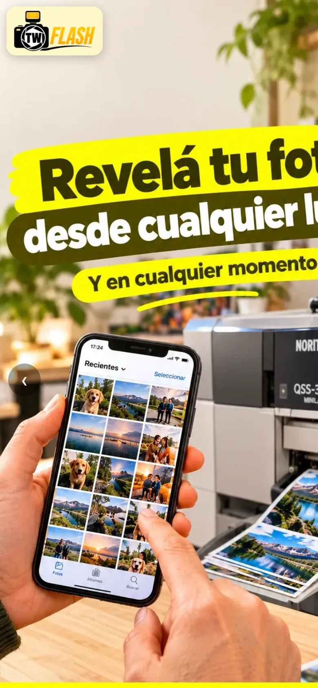
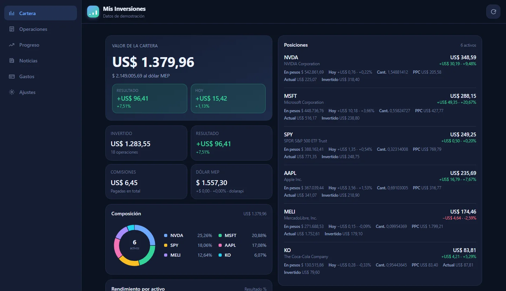
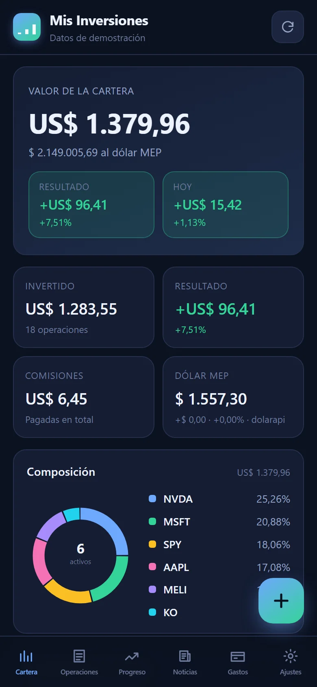
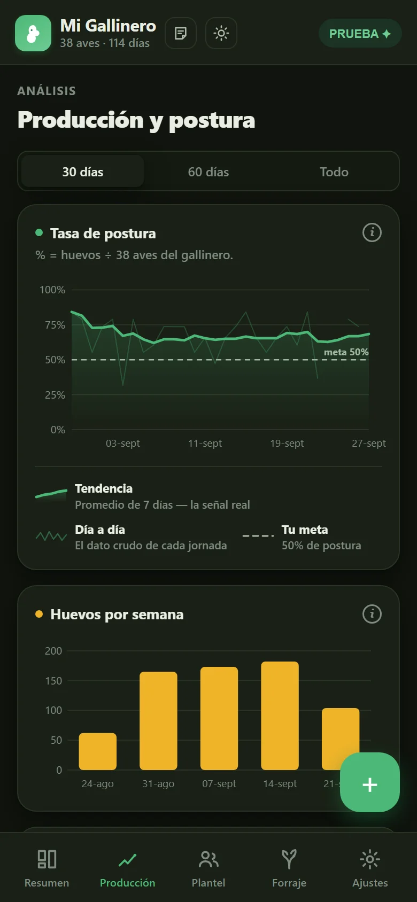
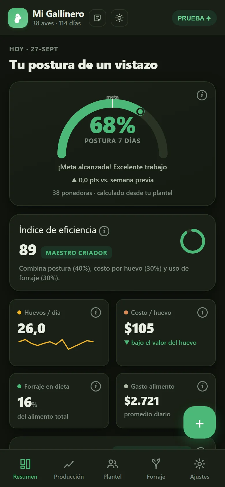
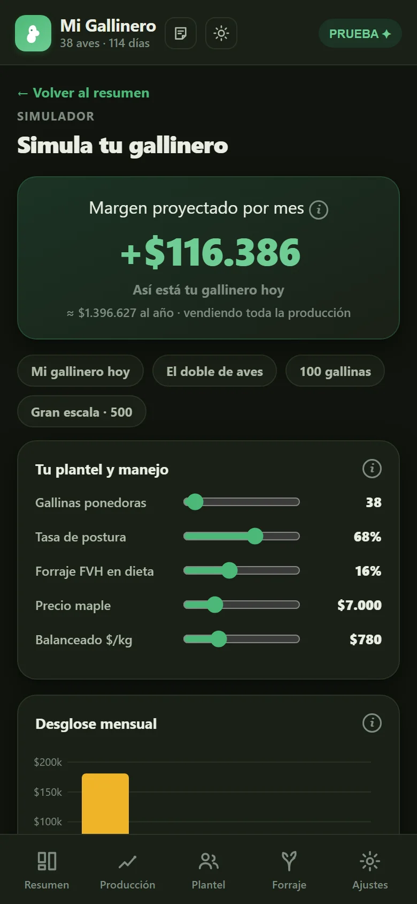

Pedidos paso a paso
El cliente elige tamaño, cantidad y producto desde el celular, ve el precio al instante y manda el pedido listo por WhatsApp.
Valle Inferior del Río Chubut · Patagonia
Soy Marcelo Riffo. Hago webs y herramientas a medida para comercios del Valle: tiendas que toman pedidos solas, paneles para administrar desde el celular y cajas conectadas a una planilla.
01 — Proyectos
En uso real · TrelewPara un laboratorio fotográfico de Trelew diseñé y programé el sistema completo: la tienda donde el cliente arma su pedido solo, el panel para administrarla y la caja del local. El negocio recibe pedidos a cualquier hora, ordenados y con las fotos ya subidas.

El cliente elige tamaño, cantidad y producto desde el celular, ve el precio al instante y manda el pedido listo por WhatsApp.
Las imágenes del cliente se suben directo a una carpeta de Google Drive del local, sin pasar por el chat ni perder calidad.
Precios y productos viven en Google Sheets. El dueño los cambia desde un panel en su celular y la tienda se actualiza sola.
Un punto de venta para la compu del mostrador, conectado a la misma planilla: lo que se vende en el local y lo que entra por la web, en un solo lugar.
Actos escolares, muestras de danza y teatro: cada evento fotografiado tiene su página propia, donde las familias encuentran y piden sus fotos.
Dominio propio, Google Search Console, analítica de uso y códigos QR con seguimiento por campaña, para saber qué publicación trae clientes.
Un tablero para seguir inversiones repartidas en varias billeteras: acciones fraccionadas, fondos comunes, cripto y efectivo, en pesos y en dólares. Lee una planilla de Google en vivo, trae los precios del día y muestra cuánto vale todo, cuánto rindió y qué parte es plata puesta y qué parte es ganancia.


Capturas con datos de demostración. Los precios son reales, las tenencias no.
Acciones desde Yahoo Finance, fondos comunes desde su valor de cuotaparte y el dólar oficial, MEP o blue, todo a través de funciones propias y sin claves de API.
Las operaciones viven en Google Sheets y la app las lee en vivo. También se pueden cargar desde la app, protegidas con PIN.
La pestaña Progreso separa la plata aportada de lo que creció solo, y muestra cómo salió cada compra y venta.
Se pasa el comprobante a una IA con una instrucción lista para copiar, y lo que devuelve se pega en la app: la operación queda cargada y revisada.
Se instala como app en Android y en Windows, abre sin conexión y se reacomoda sola: pestañas abajo en el teléfono, panel lateral en pantalla grande.
Comisiones, dividendos, cashback y tipo de cambio calculados con cuidado, y cubiertos por pruebas automáticas que avisan si algo se rompe.
Una app para llevar un gallinero chico como un negocio: se anotan los huevos y el alimento del día, y devuelve el porcentaje de postura, el costo de cada huevo, el margen del mes y cuánto ahorra el forraje hidropónico. Funciona en varios teléfonos a la vez, y los datos se sincronizan solos.



Capturas con datos de demostración, armados a partir de un registro real.
Un botón para anotar huevos, balanceado, maíz y forraje. Cada día es un solo registro: si se carga dos veces, se corrige en vez de duplicarse.
Porcentaje de postura contra una meta propia y un índice de 0 a 100 que combina postura, costo por huevo y uso de forraje.
Costo de cada huevo frente a lo que vale en el maple, ventas del mes y margen real, con precios de alimento que se editan al vuelo.
Cuánto balanceado reemplaza el forraje verde, cuánta plata ahorra y si la postura acompaña, semana a semana.
¿Y con el doble de gallinas? Proyecta huevos, gallinaza y pastoreo rotativo de 25 a 1000 aves, con los números propios del gallinero.
Funciona sin conexión: lo anotado espera en una cola y se sube solo cuando vuelve la señal. Dos teléfonos comparten la misma planilla de Google.
02 — Sobre mí
Webs, automatizaciones e integraciones para comercios del Valle.
Retrato, producto y eventos. Dirección de arte, edición y color.
Antes de programar trabajé diez años en fotografía, de cara al cliente. Por eso no hago webs para mirar: hago herramientas que resuelven el día a día del negocio, sólidas por dentro y fáciles de usar por fuera.
Trabajo con herramientas simples y baratas de mantener —Google Sheets, Drive, Apps Script— para que el comercio no dependa de servidores caros, ni de mí para cambiar un precio.
HTML, CSS y JavaScript · diseño para celular primero · apps que funcionan sin conexión
Google Apps Script · Sheets y Drive como base de datos · integraciones con WhatsApp
Composición y jerarquía · tipografía · identidad visual · banners y piezas para redes
Retrato, producto y eventos · edición y color · fotos de producto para la tienda
03 — Cómo trabajo
Me siento con vos, entiendo tu negocio, tus clientes y qué querés lograr.
Armo la estructura y el diseño: qué se muestra primero, cómo se usa, cómo se ve.
Lo construyo y lo publico. Rápido, prolijo y andando en cualquier pantalla.
Dejo los procesos funcionando solos, para que sigas ganando tiempo cuando yo ya no estoy.
04 — Hablemos
Contame en dos líneas qué necesitás. Te respondo con una idea concreta y los próximos pasos.